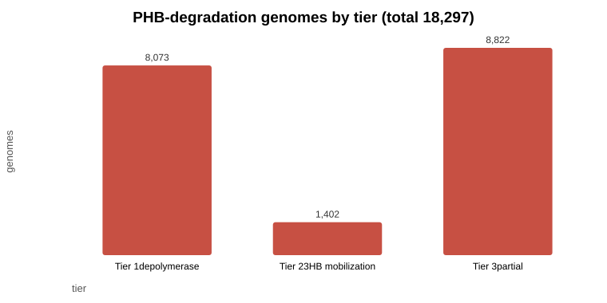
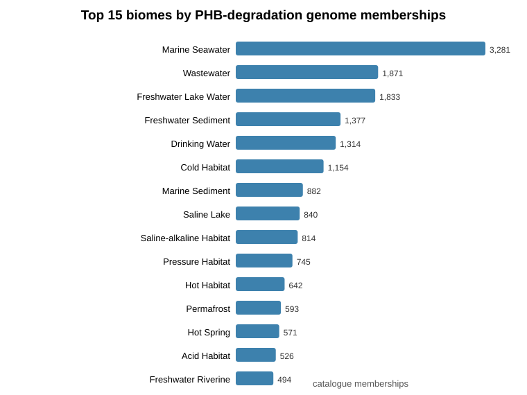
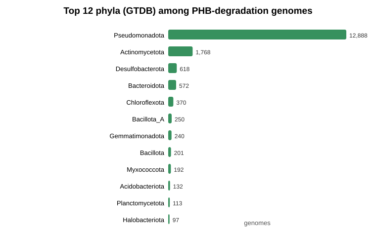
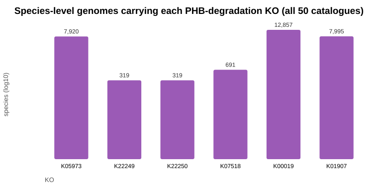
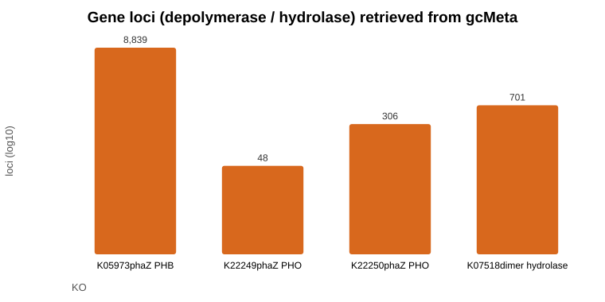
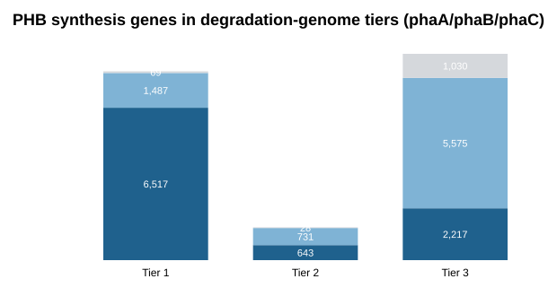
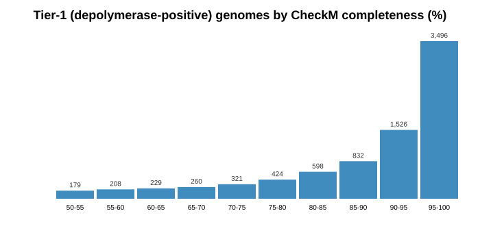
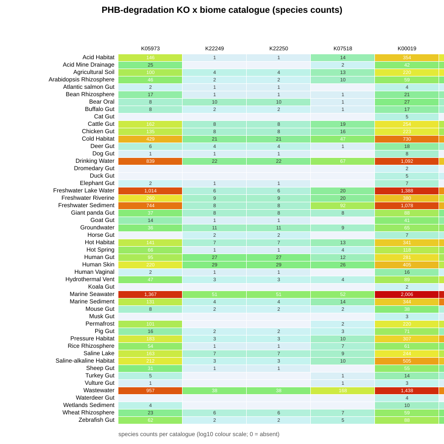

数据源:gcMeta 2025(Sun et al., NAR 54:D724-D733, doi:10.1093/nar/gkaf1115);
检索框架:PhaDED / PHA Depolymerase Engineering Database(Knoll et al. 2009)→ KEGG KO。
生成日期:2026-09-18。原始数据:phb_degradation_genomes.tsv、
phb_degradation_loci.tsv、phb_deg_distribution_by_catalogue.tsv。








| genomeNo | 物种 (GTDB) | 主要目录 | 质量 | 完整度% | PHB 降解 KO | 解聚酶位点 | 合成 KO |
|---|---|---|---|---|---|---|---|
| GCMeta_00380046 | Comamonas acidovorans | Bear Oral | Medium-quality | 100.0 | K00019;K01907;K05973;K07518 | 1 | K00023;K00626;K03821 |
| GCMeta_01229335 | Marinobacter flavimaris | Marine Seawater | Medium-quality | 100.0 | K00019;K01907;K05973;K07518 | 1 | K00023;K00626;K03821 |
| GCMeta_01230534 | Acidovorax sp000302535 | Marine Seawater | Medium-quality | 100.0 | K00019;K01907;K05973;K07518 | 1 | K00023;K00626;K03821 |
| GCMeta_01235863 | g__Marinobacter | Marine Seawater | Medium-quality | 100.0 | K00019;K01907;K05973;K07518 | 1 | K00023;K00626;K03821 |
| GCMeta_01245446 | Marinobacter salsuginis | Marine Seawater | Medium-quality | 100.0 | K00019;K01907;K05973;K07518 | 1 | K00023;K00626;K03821 |
| GCMeta_01256468 | Acidovorax facilis | Groundwater | Medium-quality | 100.0 | K00019;K01907;K05973;K07518 | 1 | K00023;K00626;K03821 |
| GCMeta_00540266 | Ralstonia pickettii_B | Drinking Water | Medium-quality | 99.94 | K00019;K01907;K05973;K07518 | 1 | K00023;K00626;K03821 |
| GCMeta_00793776 | Ralstonia sp913056305 | Pressure Habitat | Medium-quality | 99.94 | K00019;K01907;K05973;K07518 | 3 | K00023;K00626;K03821 |
| GCMeta_01211559 | Ralstonia pickettii | Marine Seawater | Medium-quality | 99.94 | K00019;K01907;K05973;K07518 | 1 | K00023;K00626;K03821 |
| GCMeta_01231339 | Cupriavidus metallidurans | Marine Seawater | Medium-quality | 99.94 | K00019;K01907;K05973;K07518 | 2 | K00023;K00626;K03821 |
| GCMeta_01252111 | Ralstonia pickettii | Freshwater Riverine | Medium-quality | 99.94 | K00019;K01907;K05973;K07518 | 1 | K00023;K00626;K03821 |
| GCMeta_01307409 | Ralstonia pickettii | Wastewater | Medium-quality | 99.94 | K00019;K01907;K05973;K07518 | 1 | K00023;K00626;K03821 |
| GCMeta_01159363 | Marinobacter alexandrii | Marine Seawater | Medium-quality | 99.88 | K00019;K01907;K05973;K07518 | 1 | K00023;K00626;K03821 |
| GCMeta_00600833 | Comamonas tsuruhatensis | Human Skin | Medium-quality | 99.86 | K00019;K01907;K05973;K07518 | 1 | K00023;K00626;K03821 |
| GCMeta_00022405 | Comamonas acidovorans | Mouse Gut | Medium-quality | 99.85 | K00019;K01907;K05973;K07518 | 1 | K00023;K00626;K03821 |
注:目录为逗号/分号分隔的多目录归属的第一项;KO 缩写见 config/phb_degradation_genes.tsv。
复现:node src/query_gcmeta_phb.js → node src/aggregate_phb_genomes.js → node src/make_visualizations.js